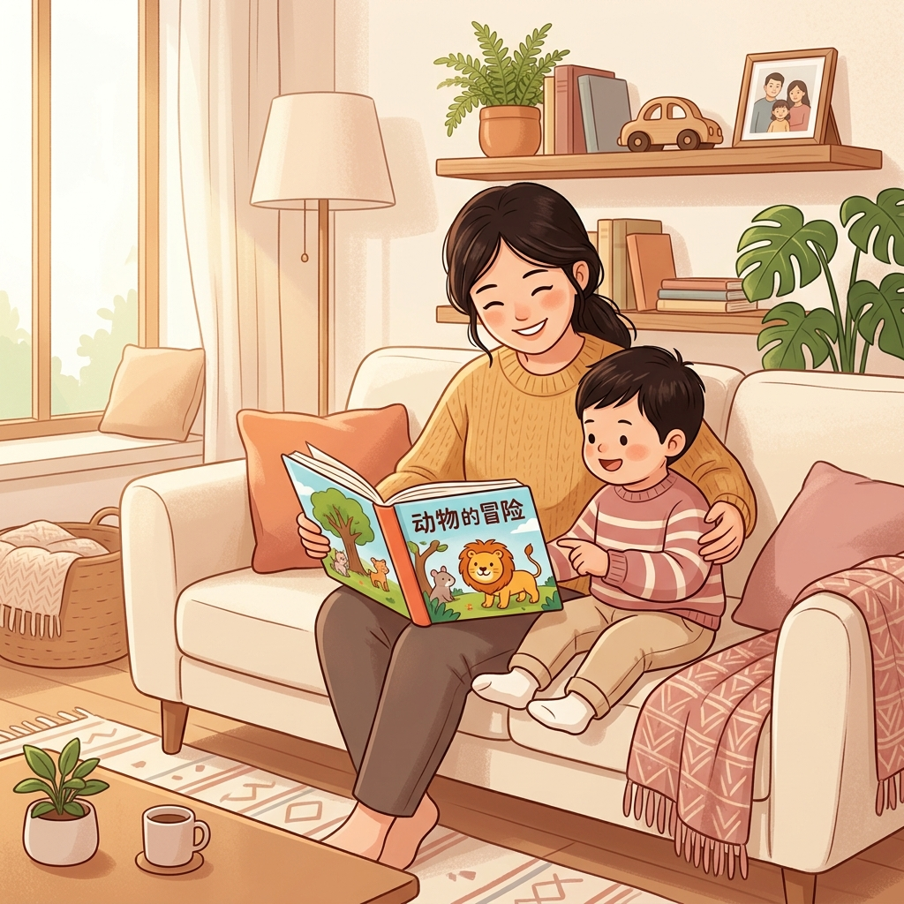

Empowering Chinese-speaking families with bilingual screening resources, developmental warning signs, and step-by-step pathways to local support services.
Autism can be reliably identified as early as 18–24 months. Recognizing warning signs allows parents to access intervention services during the most critical periods of brain development.
Any regression or loss of skills (speech, babbling, eye contact, gestures, or social abilities at any age) is a significant red flag requiring immediate developmental evaluation by a pediatrician.
Follow this path to guide your family from initial concerns to accessing services.
Use the CDC "Learn the Signs. Act Early" milestone checklist. Note any concerns about speech, eye contact, play, or social engagement.
Request a formal developmental screening at the 18-month and 24-month well-child visits. Ask about the M-CHAT-R/F questionnaire.
If screening indicates risk, seek a full diagnostic evaluation from a developmental pediatrician, child psychologist, or multidisciplinary team.
Contact your local Infant & Toddler Connection (ages 0–3) or Child Find (ages 2–5). Early intervention is free and does not require a diagnosis to start. No SSN required.
The scientific and autistic communities are shifting how they conceptualize autism. Instead of a linear scale from "mild" to "severe," autism is best understood as a multidimensional color wheel.
Each spoke represents a neurodevelopmental area: sensory sensitivity, language, social reciprocity, executive functioning, and more. An individual's profile forms a unique shape across these dimensions.
"Autistic children cannot speak."
Autism is a broad spectrum. Many autistic children are highly verbal but need support with social reciprocity, routines, or sensory processing.
"Wait and see if they outgrow it."
Early intervention during the critical brain development window (18–36 months) maximizes developmental gains. Waiting delays crucial support.
"Autism is caused by poor parenting."
Autism is a genetic neurodevelopmental condition. Extensive global research has debunked any links to vaccines or parenting styles.
This pamphlet is part of Emma Zheng's Girl Scout Gold Award initiative to increase early autism awareness among Chinese-speaking families in the DMV area and rural Hubei, China. Early diagnosis (between 18–36 months) is the single most critical factor in improving long-term developmental outcomes.
Hope Chinese School (HCS-TC) — Tyson's Corner Campus, Saturday/Sunday 2–4 PM parent break.
CCCVA Community — 541 Marshall Rd. SW, Vienna, VA 22180.